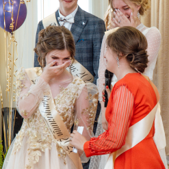

Вероника Старкова
профессиональный фотограф
В 21 веке, практически, в каждой семье есть если не камера, то планшет или телефон, с помощью которых мы фотографируем. И процесс съемки для непосвященных в «искусство фотографии», прост и понятен. Отсюда иногда и непонимание стоимости, но стоит заметить, что при всем при этом, люди всё же видят разницу между снимками.
С нашей точки зрения, профессиональный фотограф – человек, основной заработок которого – фотография. т. е. род занятий это его профессия.
Индивидуальная съемка


Девушкам и женщинам обязательно следует устраивать себе фотосессии, чтобы увидеть, насколько они красивы. В ежедневной суете легко перестать ценить свою индивидуальность, а через фотографии вы взглянете на себя по-другому, заново полюбите себя. Разве это не чудо?
Фотосессии нужны для того, чтобы сохранять воспоминания. Согласитесь, вы ведь с удовольствием рассматриваете снимки 2-х,3-х, 5-ти летней давности?
Нередко фото нужны для портфолио, личных сайтов и страниц в соцсетях. С каждым годом это становится все более частой причиной, по которой люди приходят на фотосессию.
Праздники/События



В ходе проведения любого праздника может потребоваться видео и фотосъемка. В нашей студии можно заказать фиксацию детских и взрослых мероприятий. Чаще всего для запечатления ярких моментов и веселых эпизодов события применяется именно многокамерная и репортажная фотосъемка.